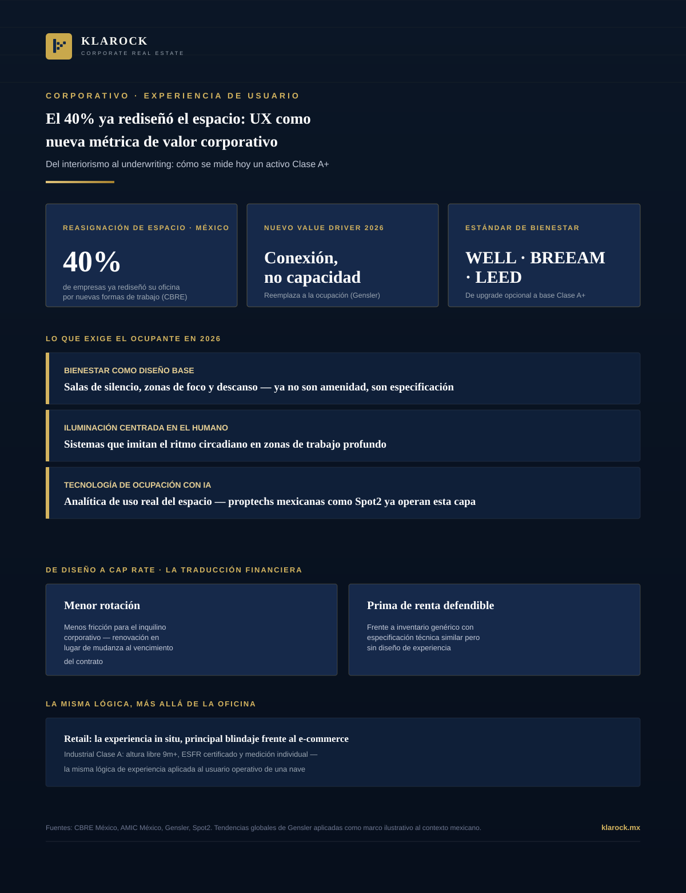

Corporativo · 2026-09-12
El diseño de propiedades dejó de medirse solo en metros cuadrados y renta por m². La experiencia de quien habita el espacio —empleado, cliente o visitante— ya es parte del underwriting. Qué exige el ocupante en 2026 y cómo se traduce esa exigencia en vacancia, retención y valor del activo.

Durante dos décadas, el desarrollo corporativo y comercial en México se evaluó con una métrica dominante: costo por metro cuadrado. Hoy esa métrica sigue siendo el punto de partida, pero ya no es suficiente. Según CBRE México, 40% de las empresas en el país ha reasignado su espacio corporativo basándose específicamente en el diseño de las nuevas formas de trabajar —no en la cantidad de escritorios que caben, sino en la experiencia que el espacio genera para quien lo usa. Ese giro, documentado también por gremios de interiorismo corporativo y firmas globales de workplace strategy, tiene una implicación directa para el inversionista institucional: la experiencia del usuario dejó de ser un diferenciador estético y se volvió una variable de riesgo y valor.
El argumento para el inversionista institucional no es estético, es operativo. Un activo diseñado en torno a la experiencia del usuario reduce la fricción que empuja a un inquilino corporativo a mudarse: menos rotación, contratos que se renuevan en lugar de terminarse, y una prima de renta defendible frente a inventario genérico. En un mercado de oficinas donde la vacancia ya se polariza fuertemente por submercado y calidad de activo, la experiencia del usuario es uno de los factores que explica por qué edificios con especificación técnica similar terminan compitiendo en ligas de renta distintas. Lo mismo aplica, con sus propios indicadores, al retail premium —donde la experiencia in situ es hoy el principal blindaje frente al e-commerce— y al segmento industrial multi-tenant, donde el estándar Clase A (altura libre de 9 metros o más, sistema contra incendio ESFR certificado, medición individual de servicios) funciona, en esencia, como la misma lógica de experiencia aplicada al usuario operativo de una nave.
Incorporar la experiencia de usuario al underwriting significa evaluar un activo más allá de su especificación técnica y su ubicación: preguntar si el diseño reduce fricción operativa, si es compatible con certificaciones de bienestar reconocidas por el ocupante corporativo objetivo, y si cuenta con la capa tecnológica mínima para generar datos de uso reales. Esa evaluación es cada vez más relevante en decisiones de reposicionamiento de activos existentes, donde una intervención de diseño centrada en experiencia puede mover la aguja de vacancia y renta sin requerir una reconstrucción completa.
En Klarock incorporamos la lectura de experiencia de usuario —bienestar, tecnología de ocupación, certificaciones y diseño adaptable— como parte del análisis de cada activo corporativo, comercial e industrial que evaluamos para nuestros inversionistas institucionales en México.
Escríbenos y un socio director te contactará en menos de 24 horas hábiles.
Contactar a un Socio Director